Release 0.71.0 · 2026-11-04
What changed in Atlas 0.71.0
Atlas 0.71.0 draws more of your code as it really runs: the files a loop writes, a folder copied to any depth, a file or a connection handed from function to function, a path an environment variable names. Forms that say the same thing now draw the same picture in all three languages. And the page opens on the one picture the agent reads.
Was drawn wrong, now drawn right
Each of these drew something your code does not do. In a picture of Atlas, a red outline is what only the release before draws, a green one what only this release draws.
A loop writes only the files it writes
For each kind of ["books", "games"], root / kind / f"{kind}.csv" was drawn as four files, two of which no run writes. A name bound once is now one value wherever it stands. Two lists kept in step only by an index are still two values, and Atlas draws every pairing: the code does not say they belong together.
In Atlas: the release before and this one
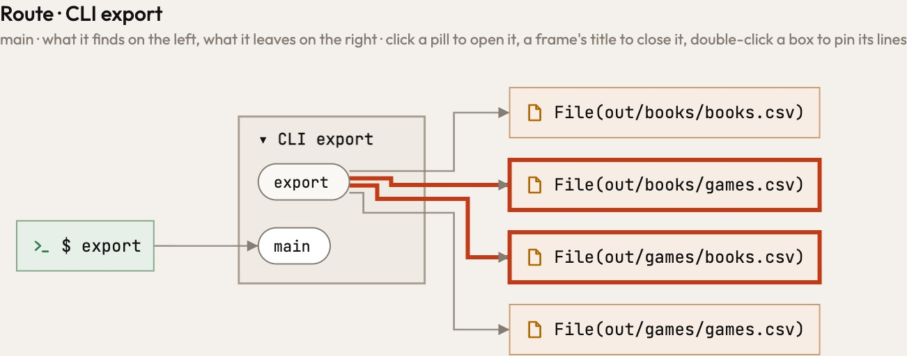
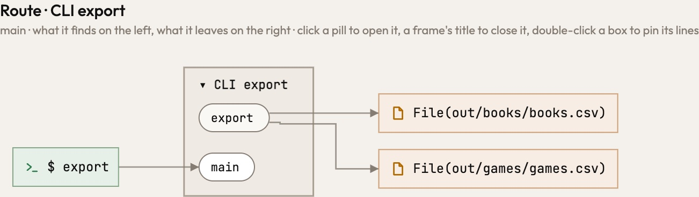
A recursive copy reaches every depth
A function that calls itself on each subfolder was followed one level at a time, down to a limit, and ended in a folder of a {source} no call hands. Now the recursion is followed to where it ends: the copy reads data/** and writes backup/**, as a walk with rglob("*") does. Two functions that call each other in turn are one recursion too.
In Atlas: the release before and this one
data/, and a {source} no call hands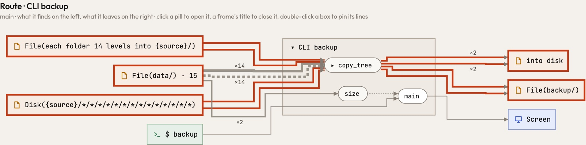
data/ and writes at any depth in backup/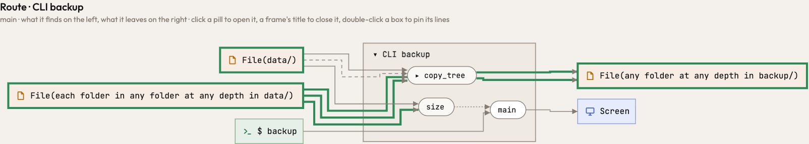
A file or a connection you hand on keeps its place
A function handed an open file read and wrote nothing, so atlas-code check asked why emit does nothing, and a server's connections reached a bare Web. Now every read, write and send through a handle goes to the place it was opened at, also in the functions it is handed to: what comes in on the left, what goes out on the right.
In Atlas: the release before and this one
count and emit touch no file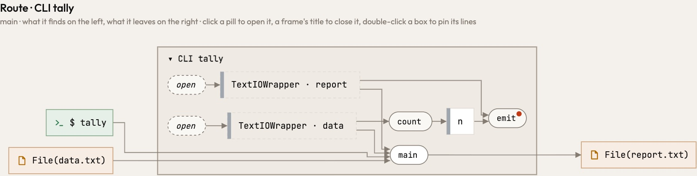
count reads File(data.txt) and emit writes File(report.txt)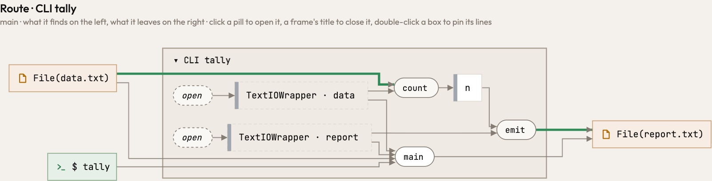
Web(127.0.0.1:7878), where its client arrives too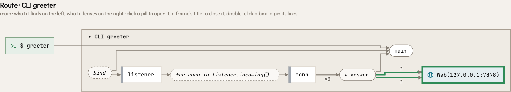
An environment variable names its file
saveReport and saveLog write the files $REPORT and $LOG name, through a helper setting(name). They were drawn writing one unnamed place, and showReport read a file nothing wrote. The same holds for a default of "", and for open(os.environ["CARD"]), which was read as a file called CARD.
Disk(setting(name))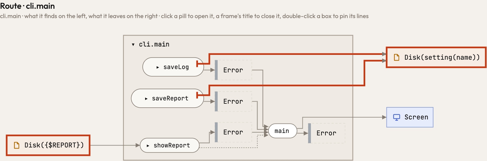
saveReport writes {$REPORT}, which showReport reads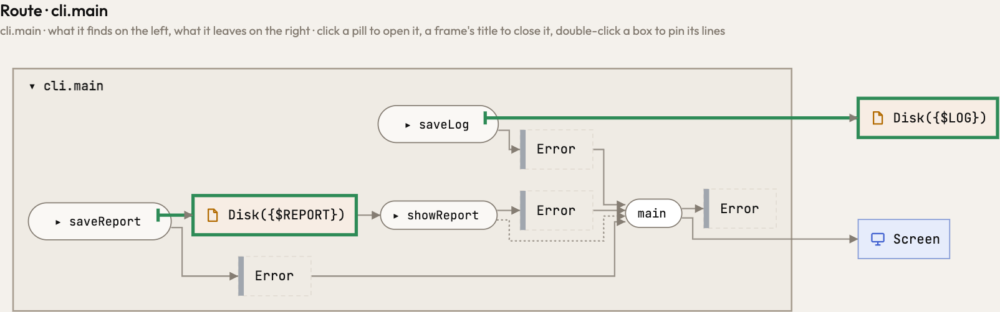
A file and the folder that holds it are found the same way
A note saved in ./data/../notes and read from notes/note.txt is one file, where it was two. Removing a file's .parent() removes its folder, not the file; a file opened with OpenOptions is the file you named, not a literal shelf.log; and notes read back by their key relative to the folder are read at notes/*, not notes/notes/*.
save writes the note into an unnamed folder, and show reads another file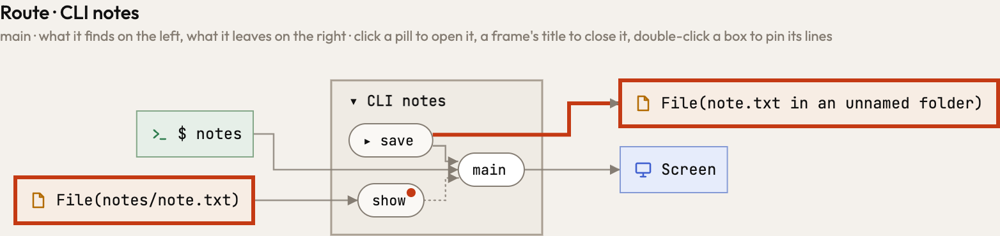
save and show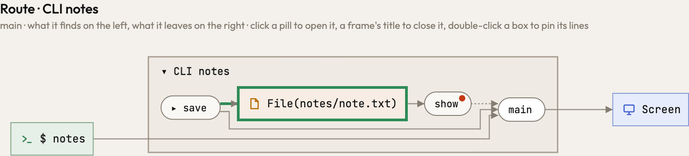
A method writes where its object was set up
When main set a shelf up in a step of its own, its two methods folded into one box that wrote an unknown Disk(write.path). Now a set-up anywhere earlier in the route counts, also in a loop or in one arm of an if, and each method writes into the shelf's folder. A nested if is drawn inside its arm, no longer as an alternative to it.
Disk(write.path)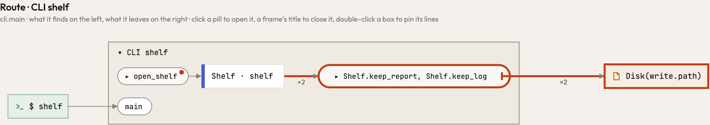
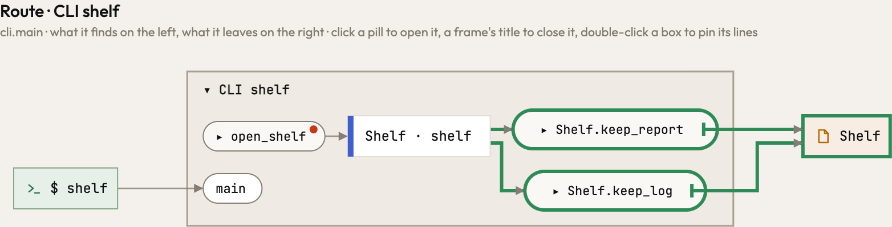
An installed command starts where pyproject.toml says
[project.scripts] ask = "ask:main" with ask.py beside the package was drawn as $ python ask.py, a script that reaches nothing. Now $ ask starts at main, and its route draws what the program does.
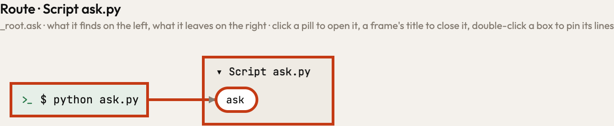
$ ask sends to the address, hears the greeting and shows it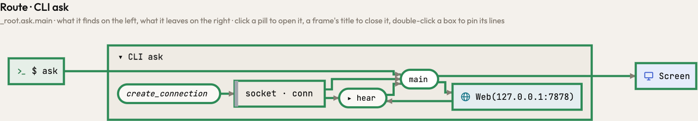
Smaller things that were drawn wrong
- A TypeScript or Rust client that looks its URL up in a table it writes (
PATHS[env]) met no route; now it meets them, as in Python (#236, #304). - A local such as
loud = samples.abs() > 0is the function's own value, no longer a value from beyond (#318, #319). - A list changed in place (
both.push(x),rows[0].push(x)) is a new value of the list from there on (#355, #366, #374). - Two versions of one library are two libraries: on Atlas itself,
atlas-code changesof a commit against itself said 505 routes changed, now none (#372). - The overview of packages is built as a route is, so opening a package only refines it, and never adds a line the closed box lacked (#69).
Same meaning, same picture
Forms that say the same thing now draw the same picture, in Python, Rust and TypeScript alike.
Eighteen ways of writing one thing, drawn alike
Each row is one thing written in several ways, and every form in it now draws what the right says. Before, at least one of them drew something else: an extra step, a literal for a name, or nothing at all.
os.listdir(d)≡fs::read_dir(d)≡p.read_dir()≡readdirSync(d)os.path.join(d, f)≡Path(d) / f≡d + "/" + fPATHS[env]≡paths.get(key) of a HashMap::from([..])≡an object literal's keyrglob("*")d/**, every depth (#325)p.push(x)≡p = p.join(x), and p.pop()≡p = p.parent()tokio::fs≡async_std::fs≡std::fsOpenOptions::new()≡File::options(), and open(p, "a")≡appendFileSync(p)≡.append(true).open(p)os.environ.get("R", "")≡env::var("R").unwrap_or_default()≡process.env.R ?? ""$R names (#248)shutil.rmtree(p.parent)≡remove_dir_all(p.parent())≡rmSync(dirname(p))p is in (#248)note.relative_to(root)≡note.strip_prefix(root)≡path.relative(root, note)root undoes (#352)std::path::absolute(p)≡path_clean::clean(p)≡p("127.0.0.1", 7878)≡SocketAddr::from(([127, 0, 0, 1], 7878))≡createConnection(7878, "127.0.0.1")127.0.0.1:7878 (#323)levels.get(name)?≡&levels[name], and first()?≡at(0)≡next(iter(..))≡[0]let gap = a.db - B.db; draw(gap)≡draw(a.db - B.db)println!("{}", Plain.name())≡Plain.name()both: list[Level] = ..≡let both: Vec<Level> = ..≡const both: Level[] = ..for (const k in KINDS)≡for k in KINDSsqlite3.connect(os.path.join("data", kind, "counts.db"))≡Rust's Connection::open(..)data/{kind}/counts.db (#327)#236, #248, #250, #299, #300, #301, #303, #323, #325, #327, #328, #343, #346, #352, #356
Studio, the page and the agent
The page opens on the picture the agent reads
atlas-code serve read a program twice: first without its libraries, a picture that was no zoom or filter of the complete one, then again with them. Now it reads once, and the page opens on the complete picture, the one the agent reads. A file no reader asks about (an image, a note, a log) no longer makes it read again.
The loading bar no longer stands at 99 %
A bar shows only when a start really reads code, and is timed by the last starts that did. The time expected fills four fifths of the bar; a reading that takes longer moves through the last fifth in seconds, so the bar never stalls at 99 %.
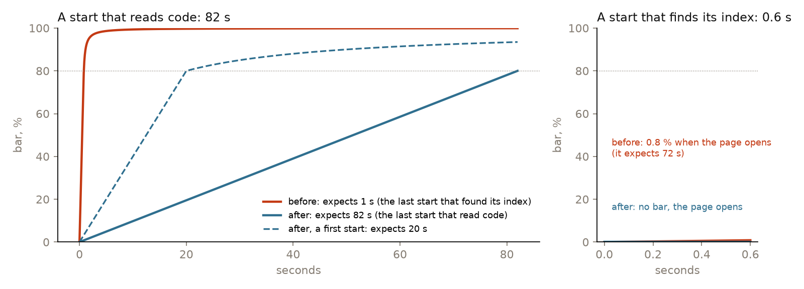
The agent says what the page draws
routenames, for each step, the places the page draws there, where it could saywrites write.pathwhile the page drewout/report.txt(#358).atlas changesnames a construct as the page does:Block.scaled,Rows(),sparse.Rows, a renamed method as one method (#369, #370, #371, #386).- Two types of one name carry as much of their module as tells them apart:
orders.model.Frameandbilling.model.Frame, everywhere (#387).
Studio's version checks for updates
A click on the version in Studio's status bar looks for a newer build and shows it; without one it shows what is new in the build you run. The answer stays 15 seconds in the status bar, and in Settings beneath the button, with the time.
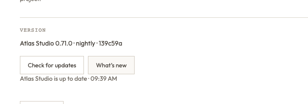
Speed
Measured on five programs, the same in every release
Faster where it reads less: a file no reader asks about costs about 95 % less, and the complete picture comes a third sooner. Rust is read 11 to 13 % faster. Python is read 22 to 31 % slower, the cost of following names and paths further (#410); atlas-code view --timings names where a reading spends its time.
Within noise on every program: peak memory, release build, clean.
Every measure, per program
0.70.00.71.0
atlas-0.70.0
Rust · 117 files · 60,291 lines · 117 modules · 2,986 functions · 3,753 nodes · 15,637 edges · 3,700 library bodies
goad_toolkit
Python · 12 files · 4,382 lines · 12 modules · 169 functions · 276 nodes · 772 edges · 0 library bodies
vectormesh
Python · 35 files · 11,096 lines · 35 modules · 238 functions · 391 nodes · 989 edges · 0 library bodies
ordash
Rust · 1 file · 317 lines · 1 module · 5 functions · 19 nodes · 35 edges · 119 library bodies
A private Python + TypeScript program
Python + TypeScript · 279 files · 44,696 lines · 297 modules · 1,385 functions · 2,030 nodes · 5,873 edges · 0 library bodies
Atlas, built and tested
Every release since the series began, on its night
Each pair: edca626 (0.70.0) and 1848710 (0.71.0) built and measured interleaved on one runner, the median of 2 or 5 rounds each (the run). Over the releases: each release's night since the series began, on its night's runner (docs/reference/performance.md).